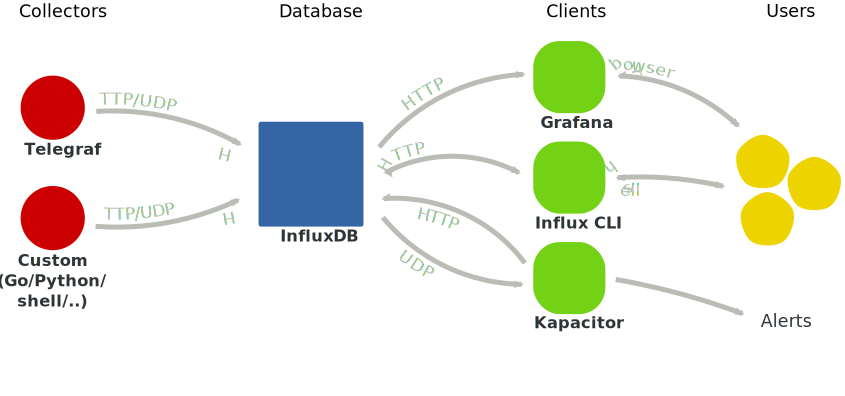
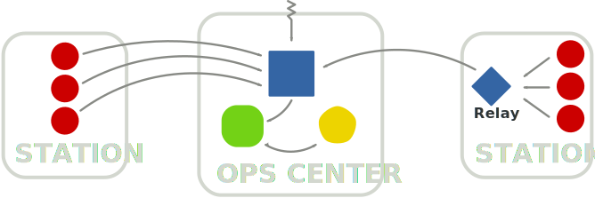
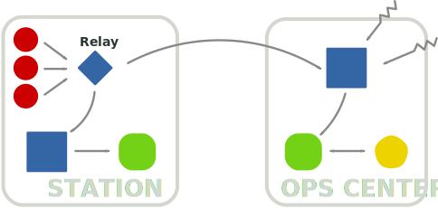

The VLBI Monitoring and Archival System (MAS) provide a system for collecting, storing, processing, and visualizing time-series data. Based on Telegraf, InfluxDB and Grafana the three component are loosely coupled together and each swapped for an alternative package. The purpose of this document give an overview of these tools use in VLBI operations and to guide a user through the installation process. The reader is expected to be competent with a Linux OS.
The role of components are as follows:
Data flow overview in the MAS
Telegraf collects data from different sources. Telegraf runs on every computer where you want to collect statistics. Telegraf includes plugins for collecting data on things such as:
disk usage and load
system load
network load and performance
process statistics
system sensors
The VLBI branch, provided in the FS repository, contains plugins for:
The Field System (log, schedule, some RDBE data)
Modbus Antennas (Currently Patriot 12m of the AuScope/GGAO generation)
MET4 meteorological system via metserver
RDBE multicast
Telegraf also large range of DevOps tools, which VLBI users may be less interested in, for example:
web servers
mail servers
database servers
message queues
InfluxDB is a time-series database. It offerers high-performance compression and retrieval for this type of data. It also has functions for processing and manipulating the data. It is similar to relational databases you may be familiar with, but is far more efficient at handling time-series data. While InfluxDB has an SQL-like query language, it is distinct and it is best to consider it as a new system.
Like an SQL type database, InfluxDB method of getting data is a push model. This means the clients, the programs with the data, initiate the connection and write to the database. If you require a fetch model, you must write your own collector program. Telegraf fill this role for some purposes.
The load on the system it runs on can be fairly high, depending on the number of points you are monitoring. For this reason, it is worth doing some testing and tuning if you wish to run it on your FS PC. If you can, it is best to run the database server on a separate machine.
The third component Grafana provides the graphical user interface. It allows you to plot historical data, and build (near) real-time dashboards for any metrics that are being written to the database. Grafana should be run on a computer that can access InfluxDB server(s) and the computer(s) you want to monitor from. Grafana runs a web server and you connect to it via your web browser. I have found Google Chrome to give superior performance for Grafana.
Each project is open-source with paid support. Grafana.net provide premium support for Grafana and InfluxData provide the same for Telegraf and InfluxDB. InfluxData also maintain the other open-source packages Chronograf (similar to Grafana), and Kapacitor (used for alerts and data processing). I will not cover these here, only because I have do not have much experience with them, however both look promising. InfluxData also maintain a commercial version of InfluxDB with cluster support and admin tools aimed at larger scales.
These instructions will cover setup and configuration of:
A server in a central location, which we will install InfluxDB and Grafana. This sever should be accessible from all PCs you want to monitor and all PCs you want to monitor from. It does not need to be at the station or a computer you use for monitoring.
A collection of client computer you want to monitor, on which we will install Telegraf.
Example Setup. As in the introduction, red circles represent collectors; blue square, the database; green rounded square, the database clients; and yellow pentagons, the user interfaces. Arrows indicate the flow of data.
Figure 2 show schematic of the architecture we will setup.
If you monitor only one station from on site, then you can likely ignore a lot of these detail and let Telegraf write directly to the database like in Station 1 of the figure.
If you do have multiple stations, or you monitor from a remote location, you have a few choices of where to keep the database. The setup we will guide you through here is easy to install and manage, as well as less expensive, but maybe be less resilient to poor network conditions.
Telegraf can tolerate short to medium size network interruptions, by holding the latest points in memory until it can write to the database. This is the method used by Station 1 in Figure 2. The number of points Telegraf holds is configurable, limited by RAM/swap, so you can set it high enough to buffer an average outage.
If you write you own collector, you will need to do this yourself. We will give some example code of this later. There is also InfluxDB-Relay, which can proxy collector’s writes to the database. This method is used by Station 2 in Figure 2. All clients write to the relay, which presents the same interface as the database, which then forwards them on if it can, and buffers them in memory if it can’t. We will not cover setup of the relay here.
If you find this setup is not adequate, you may need to run multiple database servers. See Advanced Data-flow Models for details.
Server
Installation
The commands in this section should be run as root.
For this setup, we assume you use a Debian based system for your server; however, all packages can run on different distributions and operating systems. If you are using a different distribution or operating system, follow installation documentation for InfluxDB and Grafana
Installation is managed through the systems package manager apt using dedicated repositories. The repositories are signed, so first import InfluxData’s and Grafana’s key GPG keys:
Now, add the repositories to the package manager by creating the file /etc/apt/sources.list.d/tig.list with contents (uncommenting where necessary)
##################### Grafana repo## Use for all Debian/Ubuntu variantsdeb https://packagecloud.io/grafana/stable/debian/ jessie main#################### InfluxData repo## Uncomment the appropriate line## Wheezy#deb https://repos.influxdata.com/debian wheezy stable### Jessie#deb https://repos.influxdata.com/debian jessie stable### For Ubuntu, replace xenial with appropriate codename## if you dont know this run:## source /etc/os-release && echo $VERSION#deb https://repos.influxdata.com/ubuntu xenial stable
Now, update the package manager’s database
apt-get update
and install the InfluxDB and Grafana
apt-get install influxdb grafana
InfluxDB will be configured to automatically start on boot.
Note: if apt complains about unknown transport, you will need to also install the package apt-transport-https .
To enable Grafana to start on boot:
For systemd based distributions, ie. Ubuntu ≥ 15.04 or Debian ≥ 8 (jessie), use
service grafana-server start
# or /etc/init.d/grafana-server start
InfluxDB and Grafana should now be installed and running on your server.
If you like, you can also install Telegraf on your this. This is useful for monitoring disk usage and load. If you don’t need the VLBI fork, you can run apt-get install telegraf to get the standard version from the InfluxData repository.
You should now be able to access Grafana by entering http://<server address>:3000 in a web browser. InfluxDB is also running an HTTP server on <server address>:8083, but you will not see anything there with browser.
InfluxDB’s configuration is located in /etc/influxdb/influxdb.conf. The one thing variable you may need to change is the location of the permanent storage. By default, this is set to /var/lib/influxdb/data. If this is not acceptable, it can be changed by setting the dir variable of section [data].
By default your InfluxDB server will be accessible at port 8083 on your server. It is not configured with authentication or authorization. If you wish to allow access from the internet, you should add users and authorization.
If you do edit the configuration, be sure to restart the server.
The Telegraf come with a range of useful plugins enabled by default, but you will need to set a few variables to get it to write to your database. This is done by editing the file /etc/telegraf/telegraf.conf.
General Telegraf settings
The first item is Global tags. These are tags that are added all measurements collected. It’s recommended you at-least add a tag for the station. Do this by finding the line
# Global tags can be specified here in key="value" format.
[global_tags]
and add a tag, eg
station="gs"
Next you will find the general Telegraf agent configuration, beginning with
# Configuration for telegraf agent[agent]## Default data collection interval for all inputs interval = "10s"
This sets the default period for all collectors. If you’re happy with a 10s default period leave this as is. This can be overridden on an input by input basis.
In the same section, you will also find
flush_interval = "10s"
this configures the rate at which Telegraf flushes its buffer to the database you may wish to make this shorter if your using the database for near real-time displays, or longer if you are concerned with network load.
Outputs
Now configure the InfluxDB Output
#Configuration for influxdb server to send metrics to[[outputs.influxdb]]... urls = ["http://localhost:8086"]
and change localhost to the address (can be IP or DNS name) of your server setup in the previous section. In the same section you will also find a line specifying database:
database = "vlbi"
It is OK to leave it as this default. If you are configuring the standard Telegraf installation (non-VLBI) you should change this to match the above.
This completes the necessary configuration set of Telegraf, however you likely want to enable some extra inputs
Inputs
The default configuration file for Telegraf has a set of basic PC health input plugins such as CPU usage, Disk usage, Disk IO, Kernel stats, Memory usage, Processes stats, and swap usage.
To enable more specific plugins, uncomment them in /etc/telegraf/telegraf.conf.
For example, on your Field System PC, you will likely want to enable the Field System collector so find the [[inputs.fieldsystem]] section in telegraf.conf and remove the # prefix, ie
# Poll the Field System state through shared memory.[[inputs.fieldsystem]]## Rate to poll shared memory variables# precision = "100ms"## Collect RDBE phasecal and tsys# rdbe = false
You do not need to uncomment the settings unless you want to change the indicated default.
If you would like to enable the metserver collector, uncomment the [[intpus.met4]] section. You can also may also like to add extra tags and set a custom poll interval, e.g.:
# Query a MET4 meteorological measurements systems via metserver[[inputs.met4]]## Address of metserver address = "127.0.0.1:50001" interval = "1m"[inputs.met4.tags] location = "tower"
If you have a supported antenna, you can uncomment the modbus_antenna section
# Query an antenna controller using modbus over TCP. [[inputs.modbus_antenna]]## Collect data from a modbus antenna controller antenna_type = "patriot12m"# ip:port address = "192.168.1.22:502"#slave_id = 0##Timeout in milliseconds#timeout = 10000
If you want sensors measurements, such as CPU temperature, install the lm-sensors package with apt and add the line to your Telegraf config:
[[inputs.sensors]]
If you RDBE’s and wish to collect data from them, there is two route to get the information. One is via the Field System, which you have already seen. This get tsys and pcal data calculated by the Field System. The other is via mutlicast, which contains raw data used by the FS. To enable collection of this data, uncomment or add:
# RDBE UDP Multicast listener[[inputs.rdbe_multicast]]## RDBE devices to listen. Can be an ID or a multicast address and port# eg.# device_ids = ["a","b","c","d"]# device_ids = ["239.0.2.40:20024"] device_ids = ["a","b","c","d"]## Save Tsys, Pcal, and Raw measurments## these are saved into the "rdbe_multicast_*" measurment save_pcal =false save_tsys =false save_raw =false save_statstr =false## Extra tags should be added## eg.#[inputs.rdbe.tags]# antenna = "gs"# foo = "bar"
Note this collects a large amount of data, so you may want to use it sparingly.
Working directly with InfluxDB
We give a basic introduction here, but it is recommended you read Getting Started and Data Exploration in official InfluxDB documentation.
You should now have some data flowing into your database, so let’s start accessing it.
On the server with InfluxDB installed run the command influx. This will start a command line client that connects to the database server over HTTP (at localhost:8086 by default).
I recommend you first run, in the influx client, the command
precision rfc3339
which displays timestamps in RFC3339 time, rather than unix nanoseconds.
Metadata
Now in the influx client, run the command
show databases
You should see an output similar to
name: databases
name
----
_internal
vlbi
If there is no vlbi database, your Telegraf instances are not writing to the database. Check that Telegraf is running on your clients and that you set the [[outputs.influxdb]] section of your telegraf.conf file.
The _internal database stores statistics on InfluxDB.
If you do see vlbi in the list, set that as the database for the session with
use vlbi
Now try running the command
show measurements
This will give you a list of keys such as cpu, fs, mem.... These are the names of measurements, which are are analogous to tables in a relational database.
Each measurement has a collection of fields and tags which are like columns in an table. The name of a field or tag is called its “key” and the content is its “value”.
The difference between fields and tags are that tags are indexed. This means queries on a tags are very fast. Tag values must be strings, whereas fields can host strings, booleans, integers, and floats, the latter two being 64-bits.
In InfluxDB terms, a measurement and with a set of specified tags is called a series. You can see all the series in the database with
show series
You should get a big list of measurement names and tag key-values pairs.
To see the fields keys and their associated type for a measurement, say system,
show field keys from system
If you have values for this measurement, the query should return
Each row specifies a point. A point is a uniquely identified by its timestamp and series (measurement and tag set). Note a series is not defied by the fields. New fields can be added and a field can be empty.
If you just want to get a single value, specify it in the select clause
select load1 from system where time > now() - 10m
Points with this value not set are ignored.
Caution: be mindful of how much data your query will return; InfluxDB will happily return multi-gigabyte results if you ask for it. If you did not include the where time > now() - 10m qualifier above, you will end up with every values in the measurement.
Note that the tag host in this query was treated just like another field. Let’s instead make use of this tag by using the group by operation:
select * from system where time > now() - 10m group by host
This will give you give you a table of output for each value of “host” similar to
This “group by” feature is particularly useful when you want to compare tags against each other. If you only want only values from one host, specify it in the where command:
select * from system where time > now() - 10m and where host='fs1'
To limit the number of results returned by a query it is often useful to use the limit n command. For example
> select temperature from met limit 1
name: met
time temperature
---- -----------
2012-03-21T18:13:00Z 18.7
Notice this gives the first result in the database because by default results are ordered by ascending time. You can override this by specifying order by time desc to get the reverse behaviour. The combination of these two commands is useful for getting the latest point in the database.
For example, to get the latest schedule reported by the Field System use the query
select schedule from fs order by time desc limit 1
Functions
Let’s look at some other useful queries. A powerful feature of InfluxDB is its functions such as meanmedian, stddev, max, min. You can see the full list in the offical documentation.
For example, if you have points in your met measurement you can get try the query
select mean(temperature) from met where time > now() - 5d group by station
This returns the mean temperature for each station over the last 5 days. The timestamp is the start of the window. Important note: if you did not include the group by station portion, this would get the mean of all stations over the last 5 days. In functions tags are automatically merged unless you specify it or use a “group by”.
You can also apply this function over windows. For example get the mean temperature at station ‘gs’ over 12 hour windows beginning 5 days ago.
> select mean(temperature) from met where time > now() - 5d
and station='gs' group by time(12h)
name: met
time mean
---- ----
2017-02-09T12:00:00Z 0.8118450448931444
2017-02-10T00:00:00Z
2017-02-10T12:00:00Z 0.09354291840138866
2017-02-11T00:00:00Z 1.7690925925927894
2017-02-11T12:00:00Z 8.632935185183568
2017-02-12T00:00:00Z 7.424282407405593
2017-02-12T12:00:00Z 7.503481481481151
2017-02-13T00:00:00Z 6.117377314814672
2017-02-13T12:00:00Z 4.5796948438333756
2017-02-14T00:00:00Z -2.760842592592547
2017-02-14T12:00:00Z -1.1050233784917751
Again, timestamps are the start of the window.
Note, in my example, there is a blank region, this is because no data was collected in this window. By default, if the are no points in a particularly window, the function outputs null (the absence of data). This can be overridden by with the fill option, for example to use linearly interpolation use fill(linear):
> select mean(temperature) from met where time > now() - 5d
and station='gs' group by time(12h) fill(linear)
name: met
time mean
---- ----
2017-02-09T12:00:00Z 0.8029195834044832
2017-02-10T00:00:00Z 0.4482312509029359
2017-02-10T12:00:00Z 0.09354291840138866
2017-02-11T00:00:00Z 1.7690925925927894
2017-02-11T12:00:00Z 8.632935185183568
2017-02-12T00:00:00Z 7.424282407405593
2017-02-12T12:00:00Z 7.503481481481151
2017-02-13T00:00:00Z 6.117377314814672
2017-02-13T12:00:00Z 4.5796948438333756
2017-02-14T00:00:00Z -2.760842592592547
2017-02-14T12:00:00Z -1.0162018284920666
Another function is max. This is a different kind of function. While mean is an “aggregation”, meaning it aggregates the data in a window; max is a selector, meaning it selects a value from the window. The in a selector the timestamp is preserved.
For example, to get the maximum temperature in the database and the station that recorded it
Grafana is well documented. We will get you started here, but we recommend reading the full documentation
To access Grafana, open a browser and direct it to http://<server>:3000 (unless you changed the default port)
The first time you login to Grafana, the default username and password is “admin” (for both). You will be prompted to change this.
Adding the Database
To begin with, you will need to add your database to Grafana. Do this by
Select item > Data Sources from drop-down menu in the top left.
Press Add data source
From the “Type” drop-down menu, select InfluxDB
Set a name, eg “influxdb-vlbi”
Check default
Enter the address of your InfluxDB server. This is likely http://localhost:8086 if Grafana and InfluxDB are hosted on the same machine.
Set access to proxy. This means the Grafana server will poll the database. This makes using Grafana from the Internet easier.
Set Database to vlbi
Everything else you can leave as-is. Press add to finish.
Creating a Dashboard
A dashboard is single page with a collection of panels.
To create a dashboard select the menu item > Dashboards > New.
You will be presented with a new empty page and options for a new panel. Panels are created in rows and you have an empty row. Create a new Graph panel by selecting it from the list. This will create an empty panel. It will have no data points because we having given it a query.
Edit the panel by
Getting the panel menu by pressing the panel title,
then selecting “Edit”.
This will bring up the graph options. By default you should be on the “Metrics” tab of the Graph editor with the list of queries for this panel. Open the query editor by pressing the text of the query.
Choose your measurement you want to query by pressing “select measurement”. This will give you a drop-down menu of all the measurements in the database. For this example, let’s select the “cpu” measurement. You can either begin typing the name or select it with the mouse.
Now choose a field by pressing value in field(value). For this example, let’s choose usage_user. Again, you can select it by with the mouse or begin typing pressing enter to complete.
You should now see a time series plot of the CPU usage.
If multiple hosts are writing to this field this graph will be misleading. Notice Grafana has automatically added a mean function to your query along with a group by time($interval).
The $interval part is a Grafana variable which scales with the time range you are viewing. This is a very convenient feature, but recall that InfluxDB groups tags together when a function is used. This means what is displayed is the average of all hosts, which is probably not particularly useful.
To plot the multiple hosts separately, add group by host by pressing “+” at the end of the GROUP BY row of the query editor and selecting tag(host). You should now see a graph for each host that is writing to that field.
The automatic names of the host are fairly ugly. Let’s add aliases to the graphs by entering $tag_host usage in the ALIAS BY field. $tag_host is an automatic variable added by Grafana and takes the the value of the tag host.
The unit of usage_user is percent of CPU time, so let’s add this to the axis. Select the “Axes” tab in the panel editor window. Under “Left Y”, select Unit > none > percent (0-100)
Let’s add a better title to the panel by selecting the “General” tab and entering, say, “CPU usage”.
Return to the dashboard by pressing “Back to dashboard” on the top menu-bar or by pressing Escape.
Experiment with exploring the data.
Try zooming-in to a time range by clicking and dragging in the Graph panel.
Select a time range from the top right.
Try using the keyboard to navigate. See list of keyboard shortcuts by pressing “?”.
Now let’s try making a near real-time display.
Open the time editor by pressing the time button in the top right of the page. Enter
From: now-5m
To: now
Refreshing every: 5s
then press “apply”
You may notice if you see your graphs disappear when you zoom into a short time range. This is because our query is returning some empty windows (remember we are using group by time($interval)) and we are using fill(null). Grafana’s default behaviour is to break lines on ‘null’. This is handy to see when data stopped but of course, if your data is surrounded by empty windows, you’re not going to see anything!
Fortunately, Grafana has a way to deal with this. In the “metrics” tab of a Graph panel, there is a “Group by time interval”. This allows you to set a limit on the size of the $interval variable. So you could put in >10s if you’re sampling at 10s intervals. This can also be set to a default for the whole data source.
The other ways of dealing with this are:
Changing the DB query to fill with something other than ‘null’. This is done with either fill(none) which just doesn’t return empty windows, or by fill(x) which fills empty windows with value x.
Changing the graph panel’s behaviour on nulls. This is found by under the “Display” tab of a Graph panel.
The “Group by time interval” setting is probably the best way to deal with it unless you have some less common need.
Importing Dashboards
You can also import and export dashboards in JSON format.
If you have met data in your database you can try try importing our prepared dashboard. This dashboard uses some more complex features to show the full range of data, which is particularly useful for seeing anomalies.
In Grafana, from the Dashboards dropdown menu, select import
Select “Upload .json File” and find where you save the file
Select your data source if you need to.
If you would like to import historical data to the “met” measurement you can try using the Weather Log Importer. You will need Go installed.
Other topics
Other topics that are worth learning about in Grafana but we haven’t covered here are:
Other panel types and adding new ones
Users, groups and permissions
Templating
Annotations
Using InfluxDB with other tools
This section is a work-in-progress
As well as Grafana, you can also easily access the data in the database via your own tools. There is probably already a client library available for your favorite programming language. Have a look at the list of client libraries.
If you are building real-time plots, you can get the latest points by using the query (for example)
The InfluxDB-Python has helper functions to import your queries as as time-series Dataframes. You can then use all the tools of Pandas such as interpolating two series together and plotting via matplotlib.
For example, this script get Azimuth and Elevation from the antenna measurement and the tsys data from fs_rdbe_tsys and plot the average in bins over the az-el plane.
Note: there is currently a bug in the python library which results in queries being truncated to 10000 points
import matplotlib.pyplot as pltimport numpy as npimport pandas as pdimport influxdbclient = influxdb.DataFrameClient(host='localhost', port=8086, database="vlbi")TIME_RANGE ="time > now() - 60d"results = client.query("select Azimuth1, Elevation1 from antenna where %s"% TIME_RANGE, chunked=True, # Currently does not work in 1.2 )azel = results['antenna'].groupby(level=0).first()# Map Az to [-180, 180]azel["Azimuthreal"] = np.mod(azel["Azimuth1"]+180, 360)-180results = client.query("select mean(chan_0010) from fs_rdbe_tsys \ where rdbe = 'b' and %s group by time(1s) fill(none)"% TIME_RANGE, chunked=True, # Currently does not work in 1.2 )tsys10 = results['fs_rdbe_tsys'].groupby(level=0).first()tsys10[tsys10['mean'] >1000] = np.nan;tsys10.plot() plt.savefig("tsys10.png")#Concat and forward fills = pd.concat([azel, tsys10], axis=1).ffill() ax = s.plot.hexbin(x="Azimuth1", y="Elevation1", C="mean", reduce_C_function=np.mean, gridsize=70, cmap=plt.cm.YlOrRd )ax.set_xlabel("Azimuth")ax.set_ylabel("Elevation")plt.savefig("heatmap.png")
Creating new collectors
InfluxDB takes in data over HTTP. This makes it easy to write client libraries with any programming language.
There is probably already a client library available for your favorite programming language. Have a look at the list of client libraries.
Shell
A very basic option is to use the curl program.
#!/bin/sh##DB=stationPRECISION=s # or [n,u,ms,s,m,h]; determines the meaning of the timestampURL="http://localhost:8086/write?db=$DB&precision=$PRECISION"DATA='weather,station=washington temperature=35 pressure=1024.5 humidity=95.1 1484842058'curl -i -XPOST $URL --data-binary $DATA
The contents of $DATA are in the InfluxDB Line Protocol. This is a text based format for writing points to InfluxDB and takes the form
Each line, separated by the newline character \n, represents a single point in InfluxDB. For full details on the InfluxDB line protocol see the Official Documentaiton.
This example writes a point to of measurement type “weather” with tag “station” set to “washington” fields “temperature”, “pressure” and “humidity” set to floating point values at the time 2017-01-19T16:07:38+00:00 (1484842058 unix time)
In this example, the time stamps are in UNIX time (seconds since 1970-01-01T00:00:00Z, not counting leap seconds). The meaning of the time stamp is is determined by the PRECISION variable which has been set to “s” for seconds. If, for example PRECISION is set to n for nanoseconds (the default), the time stamp is interpreted as UNIX nano seconds. In general it is best to use the lowest precision you can, as this improves the performance and compression of the database.
If you do not include the timestamp, the servers time is used with nanosecond precision.
Go
Go has a client library written and supported by the InfluxDB team. See the InfluxDB Client.
Alternatively, you can add your own plugins to Telegraf which is itself it written in Go.
Creating input plugins for Telegraf has the advantage that your connection, buffer and configuration are all managed for you. It also makes your setup more easy to manage and, since Telegraf supports multiple output types, so you won’t be tightly coupled to InfluxDB.
You will need to have Go installed and setup on some computer, although not necessarily a Field System pc, or even Linux.
If you want to add your own collectors to the VLBI branch of Telegraf, start by getting the main source
go get github.com/influxdata/telegraf
then add the VLBI repository and checkout the VLBI branch
cd$GOPATH/src/github.com/influxdata/telegraf # $GOPATH=~/go if not set.git remote add vlbigsfc https://vlbi.gsfc.nasa.gov/software/fs/src/telegraf.gitgit fetch vlbigsfcgit checkout vlbi
If you want to build Telegraf with Field System support, you will need to get the Field System Go library:
go get -u vlbi.gsfc.nasa.gov/go/fs
Input plugins are stored in plugins/inputs. You will likely find it easiest to copy a preexisting plugin as a base. The met4 pluign is particularly simple
cd ~/go/src/github.com/influxdata/telegraf/plugins/inputs
cp -r met4 myplugin
cd myplugin
mv met.go myplugin.go
And edit myplugin.go. Add your plugin to the import declaration in telegraf/plugins/inputs/all/all.go.
To build Telegraf, run
cd /path/to/telegraf
make
Which will create a statically linked binary at $GOPATH/bin/telegraf. If you are cross-compiling this for a Field System PC, instead run:
GOOS=linux GOARCH=386 make
You can copy the binary $GOPATH/bin/telegraf to the FS pc.
To test your plugin, create a sample configuration file and run it
If you wish to make Grafana accessible via the open Internet, you have some options:
Directly via port 3000. This is the default setup and perfectly fine. You may need your network administrator to open this port a firewall for you.
A slightly nicer way is allow access directly to Grafana via port 80, HTTP’s default. To do this, give Grafana permissions to bind to privileged ports with
then set http_port = 80 in /etc/grafana/grafana.ini.
Again, you may need your network administrator to open this port a firewall for you.
Note: you may need to run the setcap command each time you upgrade Grafana.
Reverse Proxy
A third option, and the most versatile, is to use another web server as a reverse proxy. This is useful if you already run a web server on your network and want Grafana to appear as a subdirectory on that server. The web server and Grafana do not need to be on the same computer
No matter which web server you use, you will need tell Grafana where it is located. Do this by setting, in /etc/grafana/grafana.ini,
If you wish to open Grafana or InfluxDB to the Internet, it is advisable to configure HTTPS. This is not documented here.
Advanced Data-flow Models
If you have multiple station or monitor from a remote location, you have a few choices of where to keep the database. If you do not, you can skip to Installation.
Run a central database (Recommended)
This is easier to setup and manage, as well as less expensive. In this model, all stations and client write to the single central database at the operations center. See the figure
Telegraf will tolerate network interruptions, to some extent, by holding the latest points in memory. The number of points it holds is configurable, so you can set it high enough to buffer an average outage.
Single Centeral Database model. As in the introduction, red circles represent collectors; blue squares, the database; green rounded squares, the database clients; and yellow pentagons, the user. Arrows indicate the flow of data.
If you write you own collector, you will need to do this yourself. There is a program called InfluxDB-Relay, which can proxy collector’s writes to the database. All clients write to the relay instead of the remote server, which then forwards them on if it can, and buffers them in memory if it can’t. This may be a good option if you are concerned about some client running out of memory during a network outage.
Decentralized model.
Run a database at each station
This has the advantage that if the network connection is lost, clients will continue to write to their local database. It is also advantageous if there are local operators that wish to look use the data.
This has the disadvantage that you will need a system capable of running the database and storing the data at each station. It can also be slow when you are querying the database remotely.
Multiple Database model.
Run databases at stations and control center
The setup would be fairly involved, but you get the best of both options. You can configure “retention” policies at the stations, so only a certain period of records are kept there. InfluxDB-Relay can be use to write to local and remote databases at the same time moderate small outages. For large outages, a program would need to be run to sync the databases.